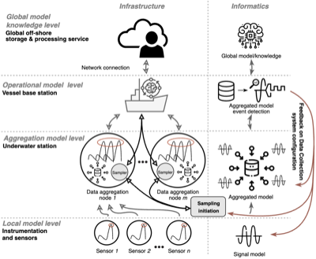

Projects
-
 AI-Based Real-Time Video Surveillance of Stuck Vehicles and Debris on Railway Grade Crossings (September 2026 - December 2027)
AI-Based Real-Time Video Surveillance of Stuck Vehicles and Debris on Railway Grade Crossings (September 2026 - December 2027)In this project, we develop AI/ML-based computer vision methods and software tools for real-time detection of stuck vehicles and debris on railway grade crossings, improving railway safety and reducing incident response times. I serve as Co-PI alongside the PI, Dr. Gasser Ali. The project is supported by the U.S. Department of Transportation, $124,976.
-
 InteFL: Federated Learning Execution Framework (2024 - present)
InteFL: Federated Learning Execution Framework (2024 - present)An open-source software framework for designing, deploying, and experimenting with Federated Learning applications, with first-class support for integrating metacognitive capabilities — allowing FL systems to monitor their own internal states, allocate resources adaptively, and detect anomalous behavior across federated clients. The framework underpins our recent research published at ICML 2026 and in IEEE Intelligent Systems.
[GitHub: InteFL Framework], [ICML 2026 paper], [IEEE Intelligent Systems paper] -

Collaborative research: IDEAS lab: ETAUS: Smarter Microbial Observatories for Realtime ExperimentS (SMORES) (2023 - present)I contribute as a volunteer collaborator to this project, which involves the collaboration between Harvard University, RIT, Florida International University, and the University of Georgia to study marine sediments and their role in natural carbon sequestration, using AI and ML to optimize data collection and predictions during field experiments. The project is supported by NSF award #2321652.
-
 Enhancing Security and Privacy of the Conventional Federated Learning (September 2022 - July 2024)
Enhancing Security and Privacy of the Conventional Federated Learning (September 2022 - July 2024)Our research introduces a Reputation and Trust-based technique to enhance Federated Learning (FL) for industrial applications, addressing issues with anomalous local data. We validate our approach using financial data, demonstrating its effectiveness. We also explore FL for robust computer vision applications in Intelligent Transportation Systems (ITSs), evaluating model performance under varying Data Quality conditions and providing recommendations for improved FL-based ITS solutions. The project is supported by the United States Military Academy (USMA) and is accomplished under Grant Number W911NF-20-1-0337.
[IEEE CAI 2023 - Trust Evaluation paper], [IEEE CAI 2023 - Federated CV paper], [IEEE AIIoT 2024 - Edge Training paper], [IEEE AIIoT 2024 - Trust-Based Anomaly Detection paper], [WIPO patent (WO2024155819A1)] -
 Developing Methods and Tools for Machine Learning Robustness Assurance under Vulnerable Cyberinfrastructure and Varying Data Quality (May 2022 - April 2024)
Developing Methods and Tools for Machine Learning Robustness Assurance under Vulnerable Cyberinfrastructure and Varying Data Quality (May 2022 - April 2024)In this project, we develop methods and tools for enhancing ML applications robustness and security of ML Integrated with Network (MLIN) systems. In contrast to other approaches, we consider MLINs from the system integration perspective, and propose methods that tie MLIN components together into an interrelated structure with the goal to improve its robustness to Data Quality variations. We examined practical ML application use cases and employed real wireless network transmission with the help of the POWDER platform. The project is supported by the grant from the U.S. CRDF Global, award #G-202102-67515.
[IEEE INFOCOM 2022 paper], [IEEE ICC 2023 paper], [WIPO patent (WO2024059625A1)] -
 Partisan Telegram Application and Operational Security Assessment (February 2022 - July 2022)
Partisan Telegram Application and Operational Security Assessment (February 2022 - July 2022)In this project, we developed an open-source report on comprehensive security assessment of the Partisan Telegram Android OS application; conducted functional analysis of the application's source code; investigated and verified vulnerabilities that jeopardized user's privacy. The project was supported by the Open Technology Fund.
[report] -
 Enhancing Sensor Network Security with Reputation and Trust-Based Technique (May 2021 - August 2021)
Enhancing Sensor Network Security with Reputation and Trust-Based Technique (May 2021 - August 2021)In this project, we developed software and hardware tools that allow: modeling the communication between real sensor devices; modeling malicious attacks against the quality of the communicated data; verifying the effectiveness of the developed security solutions. The project was supported by the Ministry of Science and Higher Education of the Russian Federation, #075-01024-21-02 (project FSEE-2021-0014).
[IEEE SMDS 2021 paper] -
 Development of Hardware and Software Modules for Critical Objects Monitoring over the Conditions of Uncertainty and Data Incompleteness for Malicious Attacks Prevention and Mitigation (September 2019 - October 2020)
Development of Hardware and Software Modules for Critical Objects Monitoring over the Conditions of Uncertainty and Data Incompleteness for Malicious Attacks Prevention and Mitigation (September 2019 - October 2020)In this project, we developed intelligent security evaluation models, risk evaluation models and methods, and software and hardware prototypes aimed at: detecting and preventing malicious attacks against environmental sensor devices; decreasing ecological risks by predicting air pollutant distribution areas. The project was conducted in a collaboration with industrial companies, and the solutions were implemented by Murmansk Commercial Seaport OAO, Russia. The work was supported by the Ministry of Science and Higher Education of the Russian Federation under the agreement #05.605.21.0189.
-
 Development of a Quantum Secure Hybrid Platform for Distributed Cyber-Physical Systems Control (May 2018 - August 2019)
Development of a Quantum Secure Hybrid Platform for Distributed Cyber-Physical Systems Control (May 2018 - August 2019)In this project, we developed multi-agent based security models and methods for mobile robotic system equipped with quantum key generation facilities, and mobile robotic devices prototypes, implemented at ITMO University, Russia, for further research and educational purposes. The work was supported by the Government of Russian Federation, Grant 074-U01.
-
 Development of Experimental Testbed for Smart City Control and Security Algorithms Research and Verification (May 2018 - March 2019)
Development of Experimental Testbed for Smart City Control and Security Algorithms Research and Verification (May 2018 - March 2019)In this project, we developed physical testbed equipped with IoT communication facilities and 10 autonomous vehicle models for security and optimization algorithms testing and verification.
[Energies 2019 paper], [IEEE WF-IoT 2020 paper], [video]
Selected Research
Representative work in top conferences and journals. The full publication list is below.
-
 Chuprov, S., Lange, R. D., Reznik, L., Shakarian, P., Zatsarenko, R., & Korobeinikov, D. (2026). ``Position: Artificial Intelligence Needs Meta Intelligence — the Case for Metacognitive AI'' in Proceedings of the 43rd International Conference on Machine Learning (ICML 2026) [CORE: A*]. Access the paper · Interactive summary
Chuprov, S., Lange, R. D., Reznik, L., Shakarian, P., Zatsarenko, R., & Korobeinikov, D. (2026). ``Position: Artificial Intelligence Needs Meta Intelligence — the Case for Metacognitive AI'' in Proceedings of the 43rd International Conference on Machine Learning (ICML 2026) [CORE: A*]. Access the paper · Interactive summary -
 Zatsarenko, R., Korobeinikov, D., Chuprov, S., & Reznik, L. (2026). ``Computationally Efficient Anomaly Detection and Exclusion for Practical and Robust Federated Learning'' in IEEE/IFIP International Conference on Dependable Systems and Networks (DSN 2026) [CORE: A].
Zatsarenko, R., Korobeinikov, D., Chuprov, S., & Reznik, L. (2026). ``Computationally Efficient Anomaly Detection and Exclusion for Practical and Robust Federated Learning'' in IEEE/IFIP International Conference on Dependable Systems and Networks (DSN 2026) [CORE: A]. -
Korobeinikov, D., Zatsarenko, R., Chuprov, S., Barea, A., & Reznik, L. (2026). ``InteFL Framework: Optimizing Federated Learning with Metacognition for Application Design and Deployment'' in IEEE Intelligent Systems [JCR Q1, IF 6.1, SJR Q1], 2026. doi: 10.1109/MIS.2026.3658072. Access the paper
-
 Chuprov, S., Reznik, L., & Zatsarenko, R. (2025). ``KISS: Knowledge Integration System Service for ML End Attacks Detection and Classification'' in IEEE Transactions on Dependable and Secure Computing (TDSC) [JCR Q1, IF 7.5, SJR Q1], 2025. doi: 10.1109/TDSC.2025.3553807. Access the paper
Chuprov, S., Reznik, L., & Zatsarenko, R. (2025). ``KISS: Knowledge Integration System Service for ML End Attacks Detection and Classification'' in IEEE Transactions on Dependable and Secure Computing (TDSC) [JCR Q1, IF 7.5, SJR Q1], 2025. doi: 10.1109/TDSC.2025.3553807. Access the paper
Venue rankings sourced from CORE Conference Rankings, Clarivate JCR (2025 release), and SCImago Journal Rank (SJR).
All Refereed Publications (Download as PDF)
Patents
- Reznik, L., & Chuprov, S. ``Excluding Compromised Local Units from Receiving Global Parameters in Federated Learning Systems'', WIPO Publication No. WO2024155819A1, published July 25, 2024. Filed by Rochester Institute of Technology; priority date January 19, 2023.
- Reznik, L., & Chuprov, S. ``Network Adjustment Based on Machine Learning End System Performance Monitoring Feedback'', WIPO Publication No. WO2024059625A1, published March 21, 2024. Filed by Rochester Institute of Technology; priority date September 14, 2022.
Books & Book Chapters
- Chuprov, S., Zatsarenko, R., & Reznik, L. (2025) ``mLINK: Machine Learning Integration with Network and Knowledge'' in Metacognitive Artificial Intelligence, eds. Shakarian, P. & Wei, H. Cambridge University Press, September 2025, Chapter 16, pp. 264-275. doi: 10.1017/9781009522472. Access the paper
Reprints
- Chuprov, S., Belyaev, P., Gataullin, R., Reznik, L., Neverov, E., & Viksnin, I. (2024) ``Robust Autonomous Vehicle Computer-Vision-Based Localization in Challenging Environmental Conditions'' in Applied Sciences. 2024, pp. 34-48., doi: doi.org/10.3390/books978-3-7258-2184-6. Reprint of the Special Issue ``Challenges in the Guidance, Navigation and Control of Autonomous and Transport Vehicles'' that was published in Applied Sciences in 2023. Access the paper
Journal Publications
- Korobeinikov, D., Zatsarenko, R., Chuprov, S., Barea, A., & Reznik, L. (2026). ``InteFL Framework: Optimizing Federated Learning with Metacognition for Application Design and Deployment'' in IEEE Intelligent Systems. 2026. doi: 10.1109/MIS.2026.3658072. Access the paper (Published in Special Issue)
- Chuprov, S., Reznik, L., & Zatsarenko, R. (2025). ``KISS: Knowledge Integration System Service for ML End Attacks Detection and Classification'' in IEEE Transactions on Dependable and Secure Computing. 2025, pp. 1-12. doi: 10.1109/TDSC.2025.3553807. Access the paper
- Chuprov, S., Zatsarenko, R., Reznik, L., & Khokhlov, I. (2024). ``Data Quality Based Intelligent Instrument Selection with Security Integration'' in ACM Journal of Data and Information Quality. 2024, vol. 16, no. 3, pp. 1-24. doi: 10.1145/3695770. Access the paper
- Chuprov, S., Belyaev, P., Gataullin, R., Reznik, L., Neverov, E., & Viksnin, I. (2023). ``Robust Autonomous Vehicle Computer-Vision-Based Localization in Challenging Environmental Conditions'' in Applied Sciences. 2023, no. 13(9):5735. doi: 10.3390/app13095735. Access the paper (Published in Special Issue)
- Berezovskaya, O., Chuprov, S., Neverov, E., & Sadreev, E. (2023). ``Review and Comparison of Lightweight Modifications of the AES Cipher for a Network of Low-Power Devices'' in Automatic Control and Computer Sciences. 2022, no. 56, pp. 994-1006. Access the paper
- Melnikov, T., Chuprov, S., Lazarev, E., Gataullin, R., & Viksnin, I. (2022). ``Improving Reputation and Trust-Based Approach with Reliability Indicators for Autonomous Vehicles Intergroup Communication'' in Tomsk State University Journal of Control and Computer Science. 2022, no. 61, pp. 108-117. Access the paper
- Marinenkov, E., Chuprov, S., Tursukov, N., Kim, I., & Viksnin, I. (2022). ``Study on Destructive Informational Impact in Unmanned Aerial Vehicles Intergroup Communication'' in Symmetry. 2022, Vol. 14, no. 8, pp. 1-18. Access the paper (Published in Special Issue)
- Viksnin, I., Marinenkov, E., & Chuprov, S. (2022). ``A Game Theory approach for communication security and safety assurance in cyber-physical systems with Reputation and Trust-based mechanisms'' in Scientific and Technical Journal of Information Technologies, Mechanics and Optics, vol. 22, no. 1, pp. 47–59. doi: 10.17586/2226-1494-2022-22-1-47-59. Access the paper
- Khokhlov, I., Reznik, L., & Chuprov, S. (2020). ``Framework for Integral Data Quality and Security Evaluation in Smartphones'' in IEEE Systems Journal, vol. 15, no. 2, pp. 2058-2065, doi: 10.1109/JSYST.2020.2985343. Access the paper
- Chuprov, S., Viksnin, I., Kim, I., Tursukov, N., & Nedosekin, G. (2020). Empirical Study on Discrete Modeling of Urban Intersection Management System. International Journal of Embedded and Real-Time Communication Systems (IJERTCS), vol. 11(2), pp. 16-38, doi: 10.4018/IJERTCS.2020040102. Access the paper
- Chuprov, S., Viksnin, I., Kim, I., Marinenkov, E., Usova, M., Lazarev, E., Melnikov, T., & Zakoldaev, D. (2019). Reputation and Trust Approach for Security and Safety Assurance in Intersection Management System. Energies, 12(23), 4527, doi: 10.3390/en12234527. Access the paper
Conference Proceedings
- Amin, A., Hasan, K., Hong, L., Chuprov, S., Thompson, R., Okpalaeze, A. D., Abena, P., Islam, T., & Ahmed, I. (2026). ``Lightweight Privacy-First Federated Learning for Medical AI'' in International Conference on Security and Privacy in Communication Systems (SecureComm 2026). doi: 10.1007/978-3-032-32764-2_13. Access the paper
- Chuprov, S., Lange, R. D., Reznik, L., Shakarian, P., Zatsarenko, R., & Korobeinikov, D. (2026). ``Position: Artificial Intelligence Needs Meta Intelligence — the Case for Metacognitive AI'' in Proceedings of the 43rd International Conference on Machine Learning (ICML 2026). Access the paper
- Zatsarenko, R., Korobeinikov, D., Chuprov, S., & Reznik, L. (2026). ``Computationally Efficient Anomaly Detection and Exclusion for Practical and Robust Federated Learning'' in IEEE/IFIP International Conference on Dependable Systems and Networks (DSN 2026).
- Peña, A. & Chuprov, S. (2026). ``Improving PID-Based Aggregation in Federated Learning for Consumer Applications'' in 2026 IEEE 23rd Consumer Communications & Networking Conference (CCNC). 2026. doi: 10.1109/CCNC65079.2026.11366291. Access the paper
- Zatsarenko, R., Chuprov, S., Korobeinikov, D., Reznik, L., & Peña, A. (2026). ``How to Improve Federated Learning in Consumer Applications? Detect and Exclude Bad Clients'' in 2026 IEEE 23rd Consumer Communications & Networking Conference (CCNC). 2026. doi: 10.1109/CCNC65079.2026.11366313. Access the paper
- Peredo, A. & Chuprov, S. (2026). ``Improving Generalization with Harmonic Aggregation in Personalized Federated Learning'' in 2026 IEEE 23rd Consumer Communications & Networking Conference (CCNC). 2026. doi: 10.1109/CCNC65079.2026.11366390. Access the paper
- Peña, A., Chuprov, S., Zatsarenko, R., & Reznik, L. (2026). ``Improving PID Control with Bayesian Optimization for Adversarially Robust Federated Learning'' in Proceedings of the 9th International Conference on Information and Computer Technologies (ICICT 2026), pp. 149-154. doi: 10.1145/3803291.3803377. Access the paper
- Zatsarenko, R., Chuprov, S., Korobeinikov, D., Reznik, L., & Peña, A. (2025). ``MADE-PI: Framework for Effective Anomaly Detection in Federated Learning Applications'' in 2025 International Conference on Machine Learning and Applications (ICMLA). 2025, pp. 446-451, doi: 10.1109/ICMLA66185.2025.00067. Access the paper
- Fonseca, P., Chuprov, S., Solis, J. P., & Marquez, G. (2025). ``Improving Lean Construction by Integrating ML for Contractor Performance Prediction'' in 2025 38th Conference of Open Innovations Association (FRUCT). 2025. doi: 10.23919/FRUCT67853.2025.11239221. Access the paper
- Chan, E. E. N. & Chuprov, S. (2025). ``Bayesian Optimization of PID Coefficients for Robust Federated Learning'' in TACCSTER 2025 Proceedings. 2025. doi: 10.26153/tsw/62178. Access the paper
- Hong, L., Chuprov, S., & Wan, Y. (2025) ``Mitigating Health Misinformation Through Human-AI Collaboration'' in AMCIS 2025 Proceedings. Access the paper
- Chuprov, S., Korobeinikov, D., Zatsarenko, R., & Reznik, L. (2025) ``No trust, no learning? Improving Federated Learning Security and Robustness with Reputation and Trust'' in Data Science Workshop ``From Theory to Practice''. Access the paper
- Korobeinikov, D., Chuprov, S., & Reznik, L., (2024). ``Towards More Robust Federated Learning with Medical Imaging Model Anomaly Detection'' in 2024 IEEE Western New York Image and Signal Processing Workshop (WNYISPW), 2024, pp. 1-4. Access the paper
- Narayanan, A., Chuprov, S., Reznik, L., Zatsarenko, R., & Korobeinikov, D. ``Intelligent Soccer Event Detection and Highlights Generation with Broadcast Cues Integration'' in 23rd International Conference on Machine Learning and Applications (ICMLA'24), Miami, FL, USA, 2024, pp. 554-559, doi: 10.1109/ICMLA61862.2024.00081. Access the paper
- Patel, H., Chuprov, S., Korobeinikov, D., Zatsarenko, R., & Reznik, L. (2024). ``Improving Federated Learning Security with Trust Evaluation to Detect Adversarial Attacks'' in 19th Annual Symposium on Information Assurance (ASIA’ 24), 2024, pp. 37-43. Access the paper
- Korobeinikov, D., Chuprov, S., Zatsarenko, R., & Reznik, L., (2024). ``Federated Learning Robustness on Real World Data in Intelligent Transportation Systems'' in 19th Annual Symposium on Information Assurance (ASIA’ 24), 2024, pp. 30-36. Access the paper
- Chuprov, S., Zatsarenko, R., Korobeinikov, D., & Reznik, L. (2024). ``Robust Training on the Edge: Federated vs. Transfer Learning for Computer Vision in Intelligent Transportation Systems'' in 2024 IEEE World AI IoT Congress (AIIoT), Seattle, WA, USA, 2024, pp. 172-178, doi: 10.1109/AIIoT61789.2024.10578970. Access the paper
- Zatsarenko, R., Chuprov, S., Korobeinikov, D., & Reznik, L. (2024). ``Trust-Based Anomaly Detection in Federated Edge Learning'' in 2024 IEEE World AI IoT Congress (AIIoT), Seattle, WA, USA, 2024, pp. 273-279, doi: 10.1109/AIIoT61789.2024.10578967. Access the paper
- Kovtun R., Chuprov, S., Gataullin, R., Ruchkan, A., Alhasan, A., & Viksnin, I. (2024). ``A Modern Approach to High Dynamic Range Image Processing with Machine Learning Architectures'' in 2024 XXVII International Conference on Soft Computing and Measurements (SCM), 2024, pp. 207-212, doi: 10.1109/SCM62608.2024.10554097. Access the paper
- Garifullin M., Turushev, T., Tursukov, N., & Chuprov, S. (2024). ``Extended Formulation of the Problem of Terrain Exploration using a Multi-agent System'' in 2024 XXVII International Conference on Soft Computing and Measurements (SCM), 2024, pp. 207-212, doi: 10.1109/SCM62608.2024.10554236. Access the paper
- Chuprov, S., Mahajan, S., Zatsarenko, R., Reznik, L., & Ruchkan, A. (2023). ``Are Industrial ML Image Classifiers Robust to Withstand Adversarial Attacks on Videos?'' in 2023 IEEE Western New York Image and Signal Processing Workshop (WNYISPW), 2023, pp. 1-4, doi: 10.1109/WNYISPW60588.2023.10349595. Access the paper
- Zatsarenko, R., Chuprov, S., Marathe, C.A., Hyland, M., & Reznik, L. (2023). ``Are Industrial ML Image Classifiers Robust to Data Affected by Network QoS Degradation?'' in 2023 IEEE Western New York Image and Signal Processing Workshop (WNYISPW), 2023, pp. 1-4, doi: 10.1109/WNYISPW60588.2023.10349560. Access the paper
- Neverov, E., Viksnin, I., & Chuprov, S. (2023) ``The Research of AutoML Methods in the Task of Wave Data Classification'' in 2023 XXVI International Conference on Soft Computing and Measurements (SCM), 2023, pp. 156-158, doi: 10.1109/SCM58628.2023.10159058. Access the paper
- Tursukov N., Viksnin I., Neverov E., Sheinman E., & Chuprov S. (2023) ``Evaluation of the Effectiveness of Neural Networks Based on the Criteria for Completing the Object Classification Task'' in 2023 XXVI International Conference on Soft Computing and Measurements (SCM), 2023, pp. 120-122, doi: 10.1109/SCM58628.2023.10159070. Access the paper
- Chuprov, S., Bhatt, K.M., & Reznik, L. (2023). ``Federated Learning for Robust Computer Vision in Intelligent Transportation Systems'' in 2023 IEEE Conference on Artificial Intelligence (CAI), Santa Clara, CA, USA, 2023, pp. 26-27, doi: 10.1109/CAI54212.2023.00019. Access the paper
- Chuprov, S., Memon, M., & Reznik, L. (2023). ``Federated Learning with Trust Evaluation for Industrial Applications'' in 2023 IEEE Conference on Artificial Intelligence (CAI), Santa Clara, CA, USA, 2023, pp. 347-348, doi: 10.1109/CAI54212.2023.00153. Access the paper
- Chuprov, S., Reznik, L., & Grigoryan, G. (2022). ``Study on Network Importance for ML End Application Robustness'' in ICC 2023 - IEEE International Conference on Communications, 2023, pp. 6627-6632, doi: 10.1109/ICC45041.2023.10279698. Access the paper
- Chuprov, S., Satam, A. N., & Reznik, L. (2022). ``Are ML Image Classifiers Robust to Medical Image Quality Degradation?'' in 2022 IEEE Western New York Image and Signal Processing Workshop (WNYISPW), 2022, pp. 1-4, doi: 10.1109/WNYISPW57858.2022.9983488. Access the paper
- Chuprov, S., Khokhlov, I., Reznik, L., & Manghi, K. (2022). ``Multi-Modal Sensor Selection with Genetic Algorithms'' in 2022 IEEE Sensors, 2022, pp. 1-4, doi: 10.1109/SENSORS52175.2022.9967296. Access the paper
- Khokhlov, I., Chuprov, S., & Reznik, L. (2022). ``Integrating Security with Accuracy Evaluation in Sensors Fusion'' in 2022 IEEE Sensors, 2022, pp. 1-4, doi: 10.1109/SENSORS52175.2022.9967235. Access the paper
- Chuprov, S., Khokhlov, I., Reznik, L., & Shetty, S. (2022). ``Influence of Transfer Learning on Machine Learning Systems Robustness to Data Quality Degradation'' in 2022 International Joint Conference on Neural Networks (IJCNN), 2022, pp. 1-8, doi: 10.1109/IJCNN55064.2022.9892247. Access the paper
- Chuprov, S., Reznik, L., Obeid, A., & Shetty, S. (2022). ``How Degrading Network Conditions Influence Machine Learning End Systems Performance?'' in IEEE INFOCOM 2022 - IEEE Conference on Computer Communications Workshops (INFOCOM WKSHPS), 2022, pp. 1-6, doi: 10.1109/INFOCOMWKSHPS54753.2022.9798388. Access the paper
- Chuprov, S., Gataullin, R., Neverov, E., Belyaev, P., Kim, I., & Viksnin, I. (2022). ``Police Office Model Performance and Security Evaluation in a Simulated Group of Mobile Robots'' in The 5th International Conference on Future Networks & Distributed Systems (ICFNDS 2021). Association for Computing Machinery, New York, NY, USA, pp. 606–615, doi: 10.1145/3508072.3508195. Access the paper
- Chuprov, S., Viksnin, I., Kim, I., Melnikov, T., Reznik, L., & Khokhlov, I. (2021). ``Improving Knowledge Based Detection of Soft Attacks Against Autonomous Vehicles with Reputation, Trust and Data Quality Service Models'' in 2021 IEEE International Conference on Smart Data Services (SMDS), pp. 115-120. Access the paper
- Domnitsky, E., Mikhailov, V., Zoloedov, E., Alyukov, D., Chuprov, S., Marinenkov, E., & Viksnin, I. (2021). ``Software Module for Unmanned Autonomous Vehicle’s On-board Camera Faults Detection and Correction'' in CEUR Workshop Proceedings, Vol. 2893, pp. 1-10. Access the paper
- Lyakhovenko, Y., Viksnin, I., & Chuprov, S. (2021). ``Integrating Smart Contracts into Smart Factory Elements’ Informational Interaction Model'' in CEUR Workshop Proceedings, Vol. 2893, pp. 1-6. Access the paper
- Usova, M., Viksnin, I., & Chuprov, S. (2021). ``Informational Messages and Space Models Application in Smart Factory Concept'' in CEUR Workshop Proceedings, Vol. 2893, pp. 1-8. Access the paper
- Khanh, T.D., Komarov, I., Don, L.D., Iureva, R., & Chuprov, S. (2020). ``TRA: Effective Authentication Mechanism For Swarms Of Unmanned Aerial Vehicles'' in 2020 IEEE Symposium Series on Computational Intelligence, pp. 1852-1858, doi: 10.1109/SSCI47803.2020.9308140. Access the paper
- Melnikov, T., Lazarev, E., Berezovskaya, O., Chuprov, S., & Viksnin, I. (2020). ``Empirical Study on Premises Monitoring Algorithm Implementation in Mobile Robotic System'' in The International Conference ``Nonlinearity, Information and Robotics'', pp. 1-6, doi: 10.1109/NIR50484.2020.9290188. Access the paper
- Usova, M., Chuprov, S., & Viksnin, I. (2020). ``Informational Space and Messages Interaction Models for Smart Factory Concept'' in 2020 IEEE International Workshop on Metrology for Industry 4.0 & IoT, pp. 617-621, doi: 10.1109/MetroInd4.0IoT48571.2020.9138292. Access the paper
- Chuprov, S., Marinenkov, E., Viksnin, I., Reznik, L., & Khokhlov, I (2020). ``Image Processing in Autonomous Vehicle Model Positioning and Movement Control'' in IEEE 6th World Forum on Internet of Things (WF-IoT) Proceedings, pp. 1-6, doi: 10.1109/WF-IoT48130.2020.9221258. Access the paper
- Chuprov, S., Viksnin, I., Kim, I., Reznik, L., & Khokhlov, I. (2020). ``Reputation and Trust Models with Data Quality Metrics for Improving Autonomous Vehicles Traffic Security and Safety'' in Proc. IEEE/NDIA/INCOSE Syst. Secur. Symp, pp. 1-8, doi: 10.1109/SSS47320.2020.9174269. Access the paper
- Chuprov, S., Viksnin, I., & Kim, I. (2019) ``Urban Intersection Management with Connected Infrastructure Objects and Autonomous Vehicles'' in 2019 IEEE International Conference on Connected Vehicles and Expo (ICCVE), pp. 1-4, doi: 10.1109/ICCVE45908.2019.8964917. Access the paper
- Chuprov, S., Viksnin, I., Kim, I., & Nedosekin, G. (2019) ``Optimization of Autonomous Vehicles Movement in Urban Intersection Management System'' in 2019 24th Conference of Open Innovations Association (FRUCT), pp. 60-66, doi: 10.23919/FRUCT.2019.8711967. Access the paper
- Chuprov, S., Viksnin, I., Kim, I., & Usova, M. (2019). ``Intersection Management Tasks in Mobile Robotic System with Decentralized Control'' in CEUR Workshop Proceedings, vol. 2344, pp. 1-12. Access the paper
- Usova, M., Chuprov, S., Viksnin, I., Gataullin, R., Komarova, A., & Iuganson, A. (2019). ``Model of Smart Manufacturing System'' in International Symposium on Intelligent and Distributed Computing, pp. 356-362, doi: 10.1007/978-3-030-32258-8\_42. Access the paper
- Marinenkov, E., Chuprov, S., Viksnin, I., & Kim, I. (2019). ``Empirical Study on Trust, Reputation, and Game Theory Approach to Secure Communication in a Group of Unmanned Vehicles'' in CEUR Workshop Proceedings, vol. 2590, pp. 1-12. Access the paper
- Usova, M., Chuprov, S., Viksnin, I., & Baranova, O. (2019). ``Model of Secure Informational Messages for Ensuring Informational Interaction in Smart Factory'' in CEUR Workshop Proceedings, vol. 2590, pp. 1-8. Access the paper
- Viksnin, I., Lyakhovenko, J., Tursukov, N., Chuprov, S., & Sozinova, E. (2019). ``Empirical Study on Modeling of People Behavior in Emergency'' in CEUR Workshop Proceedings, vol. 2590, pp. 1-8. Access the paper
- Kim, I., Matos-Carvalho, J. P., Viksnin, I., Campos, L. M., Fonseca, J. M., Mora, A., & Chuprov, S. (2019). ``Use of Particle Swarm Optimization in Terrain Classification based on UAV Downwash'' in 2019 IEEE Congress on Evolutionary Computation (CEC), pp. 604-610, doi: 10.1109/CEC.2019.8790031. Access the paper
- Viksnin, I., Chuprov, S., Usova, M., & Zakoldaev, D. (2019). ``Police Office Model for Multi-agent Robotic Systems'' in IOP Conference Series: Materials Science and Engineering, vol. 497, no. 1, p. 012036, doi: 10.1088/1757-899X/497/1/012036. Access the paper